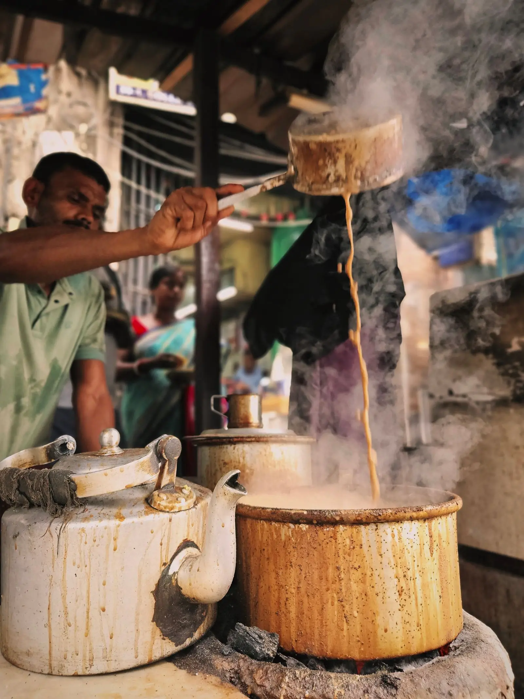
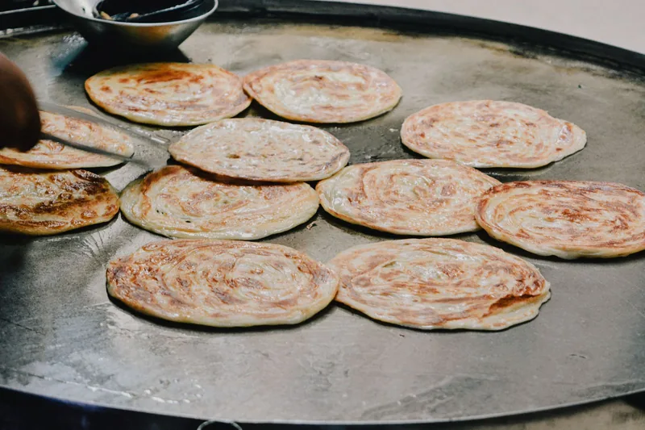
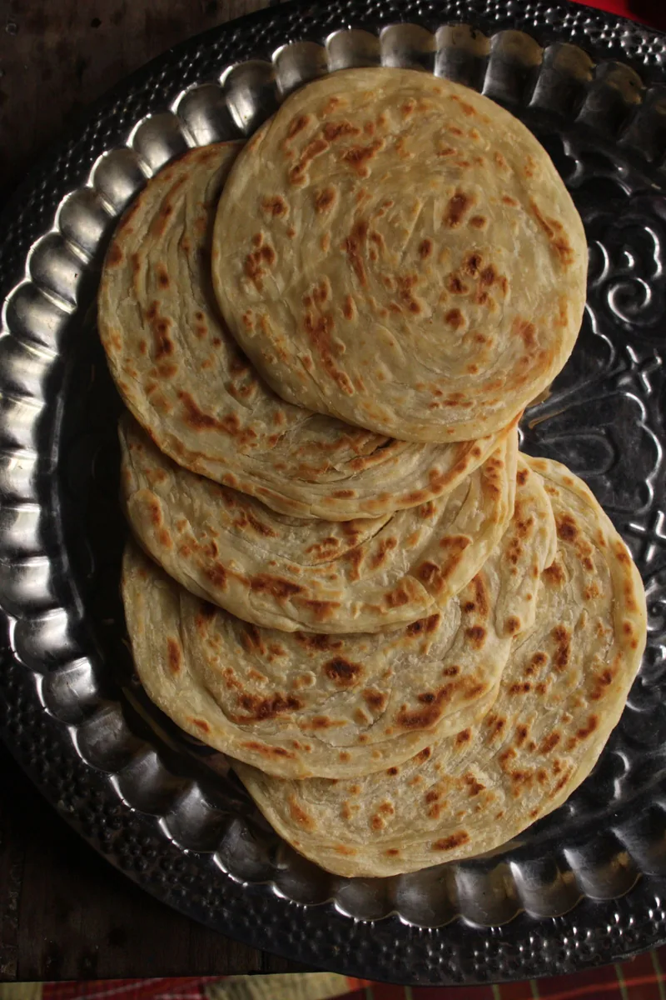
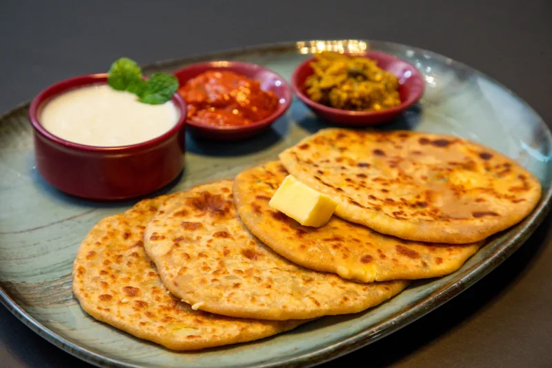
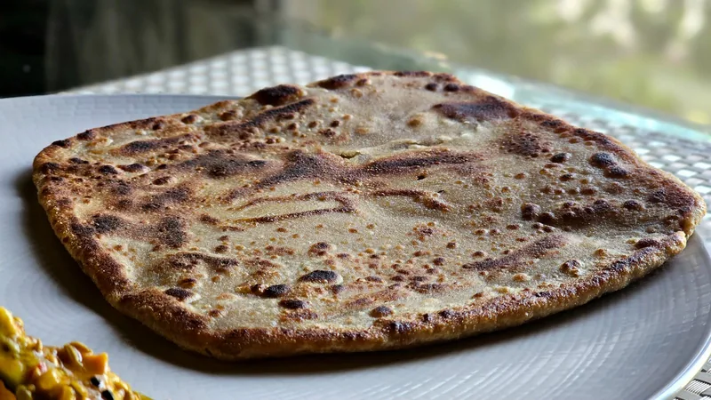
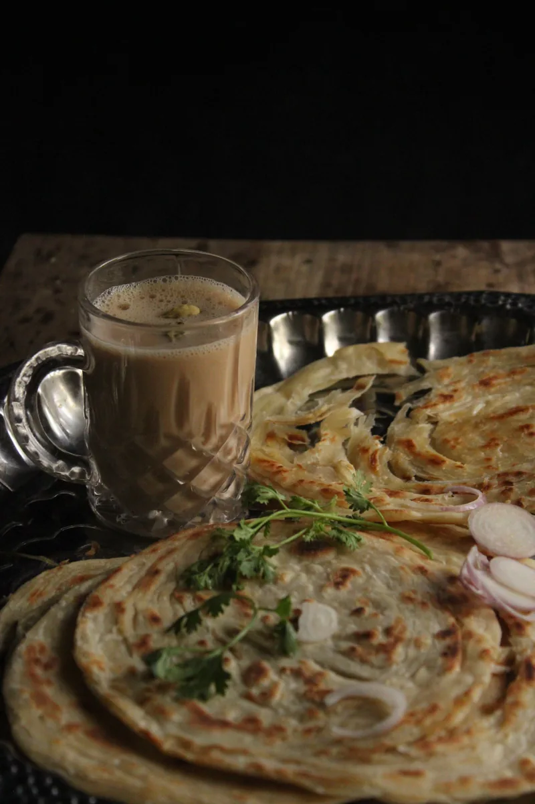
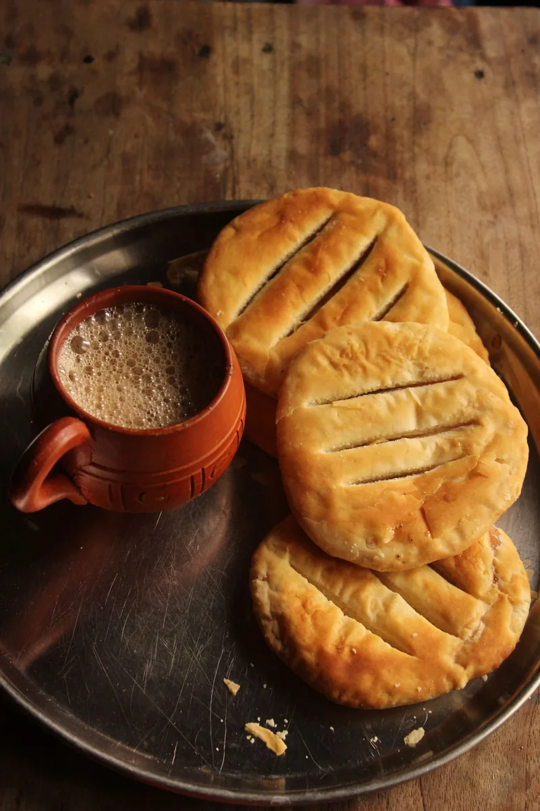
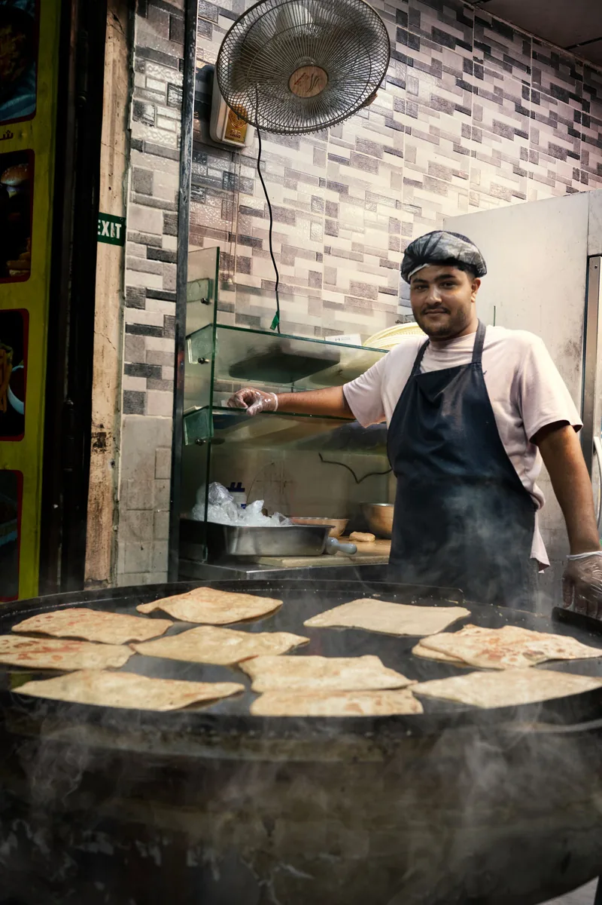
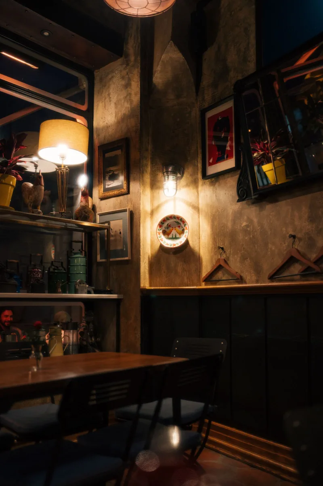

Doodh Patti
The signature milk tea — rich, creamy, traditionally brewed.
Most ordered
F-10 Markaz · Islamabad
Doodh patti from the kettle, parathas off the tawa, and a table that is never really closed — Quetta Tea & Tea serves F-10 Markaz around the clock.
The menu board
Teas poured from large samovars or cooked on a roaring fire in a traditional kettle, served in small glass teacups.
Off the tawa
Crispy outside, soft inside — savoury and sweet parathas, cooked to order on the tawa.

The classic potato paratha, and one of the most praised plates on the menu.

Soft, layered and rich — the paratha for a slow, unhurried breakfast.

Filled with cheese and served hot off the tawa, with yogurt and chutneys.

A heartier savoury filling for when chai alone will not do.

The sweet one — a paratha finished with honey, best with a plain doodh patti.

Fish and shami kebab fillings are also on the menu, alongside the savoury and sweet paratha range.


The dhaba
Quetta Tea & Tea is a Quetta-style chai dhaba in F-10 Markaz: teas brewed in kettles and samovars, parathas off the tawa, and seating that suits both families indoors and friends at open-air tables.
Because it never closes, the room changes through the day — early breakfast crowds, long afternoon sittings, and a late-night hangout after the rest of the Markaz has gone quiet.
Plan your visitWhat reviewers mention
The themes that come up again and again across its ~6,800 reviews — in reviewers' own terms, summarised here rather than quoted.
From the tawa and the kettle
Tap any photo to view it larger.
Find us
| Monday | Open 24 hours |
| Tuesday | Open 24 hours |
| Wednesday | Open 24 hours |
| Thursday | Open 24 hours |
| Friday | Open 24 hours |
| Saturday | Open 24 hours |
| Sunday | Open 24 hours |
Open 24 hours, every day of the week.
Also listed as Quetta Tea N Teas / Quetta Teas N Teas.
Open in Google Maps Visit on FacebookGood to know
It is open 24 hours, every day of the week — including late at night and early in the morning.
Ground Floor, Margalla Plaza, Sumbal Road, F-10 Markaz, F-10/3, Islamabad. Its Plus Code is M2W7+384.
Reviewers most often point to the doodh patti and gur wali chai, with an aaloo, malai or cheese paratha alongside.
Yes — there is indoor seating for families as well as open-air tables.
By phone on 051 2112777, or through its Facebook page — its only online presence; it has no official website.
Get in touch
The kettle is always on. Call to check the table, or message on WhatsApp before you head to F-10 Markaz.